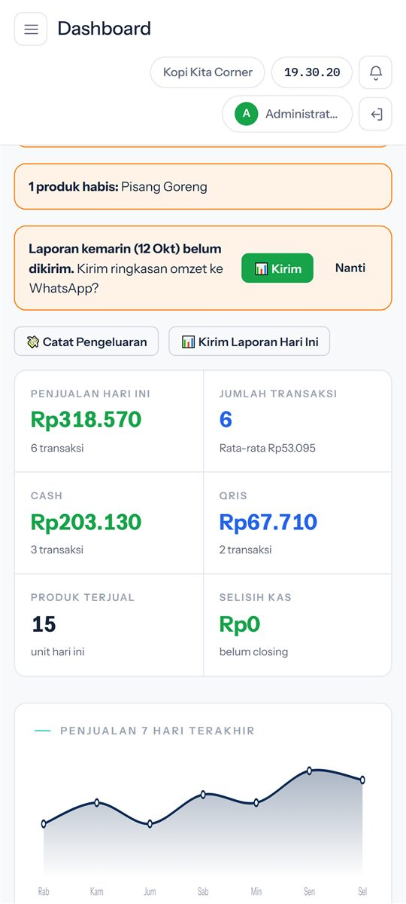
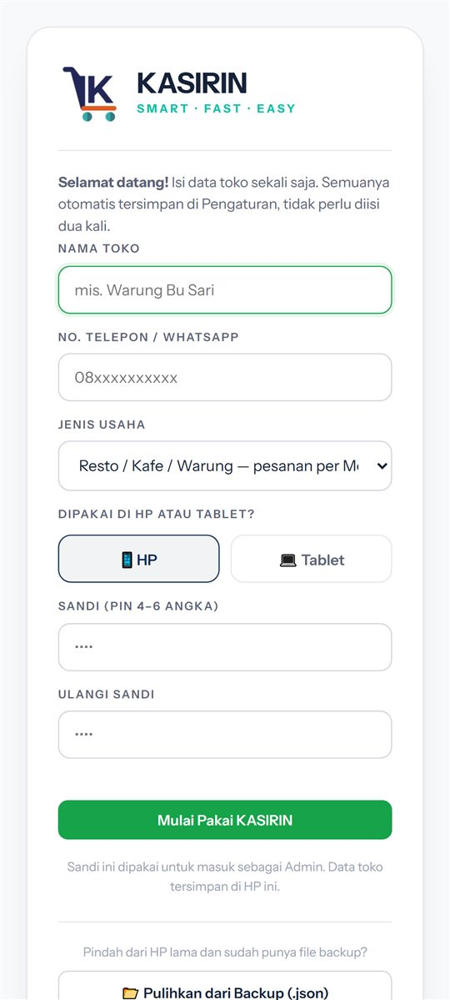
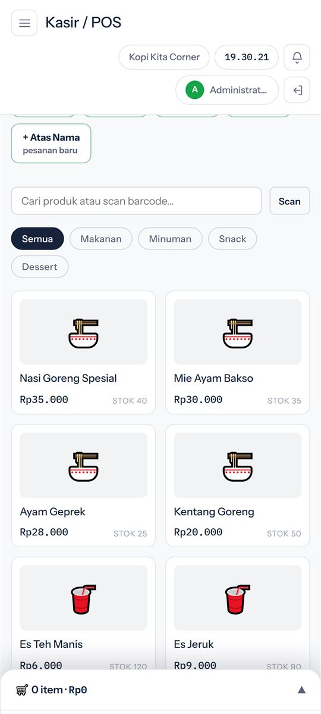
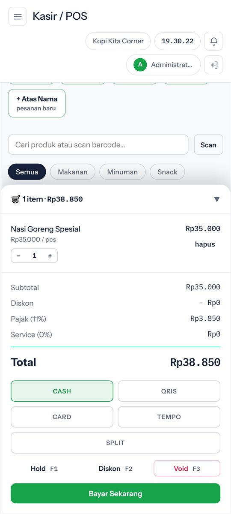
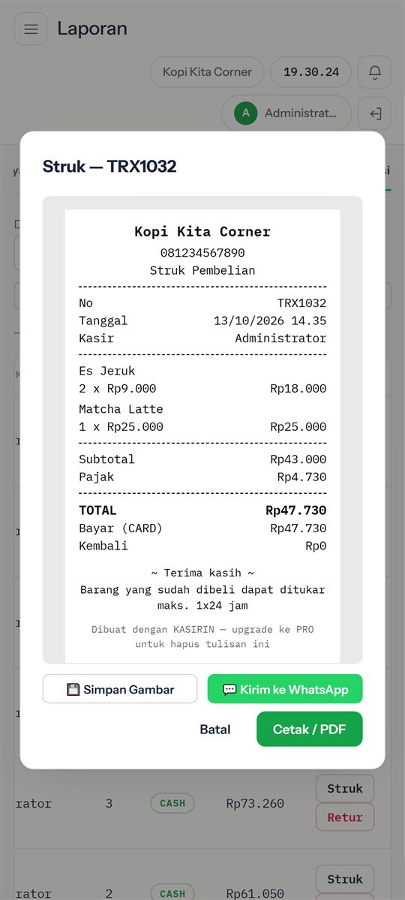
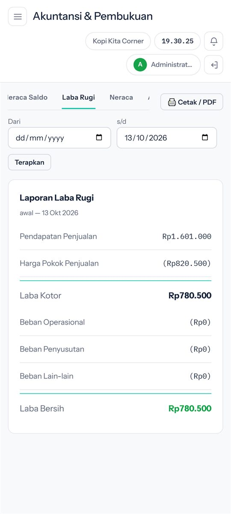
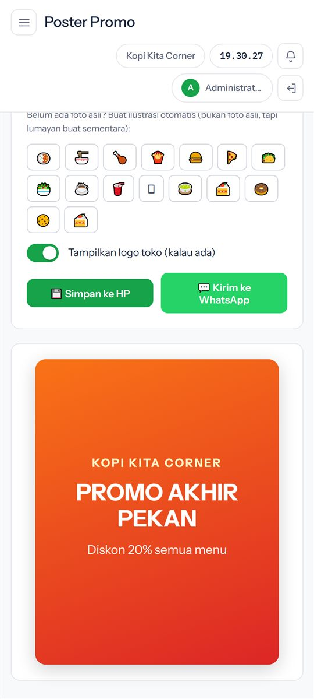

Kasir toko yang mencatat sendiri stok, laba, dan utangnya.
Catat penjualan, cetak struk, dan lihat laba rugi otomatis dari HP. Semuanya jalan tanpa internet, dan datanya tersimpan di HP kamu sendiri.
Pengguna iPhone: buka versi web di Safari, tekan Bagikan lalu Tambah ke Layar Utama. Fitur printer Bluetooth hanya ada di Android.

Tiga hal yang bikin toko rugi tanpa sadar.
Bukan karena sepi pembeli, tapi karena catatan yang berantakan. KASIRIN membereskan ketiganya sekaligus.
Stok di rak tidak sama dengan catatan
Barang habis baru ketahuan saat pelanggan menanyakan, atau malah menumpuk tanpa terjual.
Utang pelanggan lupa ditagih
Catatan di buku atau chat gampang terlewat, padahal nilainya lama-lama besar.
Tahu omzet, tapi tidak tahu untung
Uang masuk banyak, tapi setelah modal dan biaya, sisa untungnya tidak jelas.
Lihat cara kerjanya dulu.
Contoh transaksi dengan pembayaran gabungan (split), dari pilih produk sampai struk jadi.
Dari buka toko sampai tutup buku.
Satu alur sederhana yang sama tiap hari. Tidak perlu paham akuntansi.
Unduh panduan memulai (Word)Yang khusus dibuat untuk warung & kafe.
Lengkap untuk jualan sehari-hari, tapi tetap ringan dan mudah dipakai kasir baru.
Juga termasuk
- Mata Bos: pantau omzet dari HP lain
- Katalog Online + pesanan masuk ke kasir
- Poster promo siap bagikan
- Pengingat piutang lewat WhatsApp
- Printer thermal Bluetooth (58 & 80 mm)
- Import produk dari Excel
- Retur & refund dengan jurnal balik
- Backup & restore data
Sederhana, tidak bikin pusing.
Geser untuk melihat layar lainnya.






Jangan terjebak bayar sewa kasir tiap bulan.
Kasir adalah alat yang dipakai setiap hari, jadi biayanya sebaiknya sekali saja.
| Aplikasi kasir berlangganan | KASIRIN PRO | |
|---|---|---|
| Biaya | Bayar terus tiap bulan | Rp75.000 sekali bayar |
| Kalau berhenti bayar | Fitur dikunci | Tetap bisa dipakai selamanya |
| Butuh internet | Biasanya ya | Tidak, jalan offline |
| Data toko | Di server penyedia | Di HP kamu sendiri |
Contoh hitungan: langganan Rp100.000 per bulan = Rp1.200.000 per tahun. Angka ini hanya ilustrasi, bukan harga aplikasi tertentu.
Gratis
- Semua fitur dipakai penuh
- Tulisan promosi kecil di struk
- Data tetap bisa dibuka setelah masa coba
PRO
- Transaksi tanpa batas waktu
- Struk bersih tanpa tulisan promosi
- Berlaku selamanya, tanpa langganan
Pembayaran lewat DANA atau QRIS. Kode aktivasi dikirim setelah pembayaran dikonfirmasi, dan berlaku untuk semua perangkat dengan Nama Toko yang sama.
Pertanyaan yang sering muncul.
Apakah butuh internet?
Tidak untuk kasir dan pembukuan. Internet hanya dipakai untuk unduh aplikasi dan fitur opsional seperti Mata Bos, Katalog Online, dan backup cloud.
Di mana data tokoku disimpan?
Di HP kamu sendiri, tidak ada akun dan tidak ada server untuk data toko. Karena itu lakukan Backup Data secara rutin dan simpan Kode Pemulihan PIN.
Bagaimana kalau ganti HP atau HP hilang?
Di HP lama tekan Backup Data dan kirim berkasnya ke diri sendiri. Di HP baru pasang KASIRIN lalu pilih Pulihkan dari Backup. Kalau tidak ada backup, data tidak bisa dikembalikan.
Bisa untuk lebih dari satu HP?
Bisa dipasang di beberapa HP. Data tiap HP terpisah. Untuk memantau omzet dari HP lain, aktifkan fitur Mata Bos lalu bagikan link pantau ke pemilik.
Printer apa yang didukung?
Printer thermal Bluetooth ukuran 58 mm dan 80 mm yang menggunakan perintah ESC/POS, yang umum dijual untuk kasir. Struk juga bisa dikirim sebagai gambar ke WhatsApp tanpa printer.
Apakah ada versi iPhone?
Belum ada aplikasi iPhone. Versi web bisa dipakai di Safari dan ditambahkan ke layar utama, tetapi fitur printer Bluetooth hanya tersedia di Android.
Bagaimana cara membeli PRO?
Tekan Beli PRO via WhatsApp, bayar lewat DANA atau QRIS, lalu kode aktivasi dikirim. Masukkan kode itu di Pengaturan → Kode Lisensi PRO.
Coba gratis 30 hari, tanpa kartu kredit.
Pasang di HP, isi beberapa produk, dan catat transaksi pertamamu hari ini.